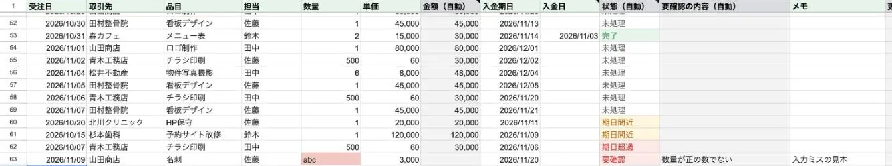
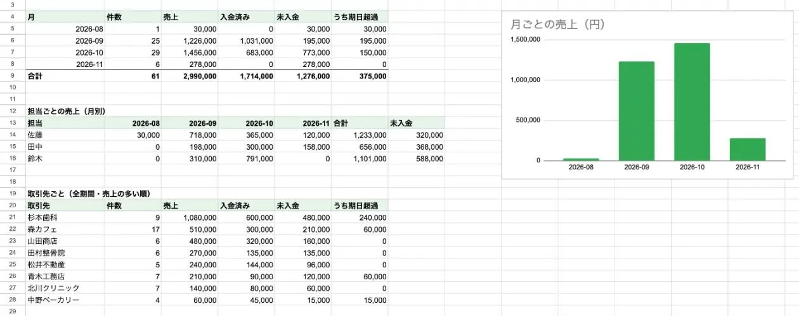
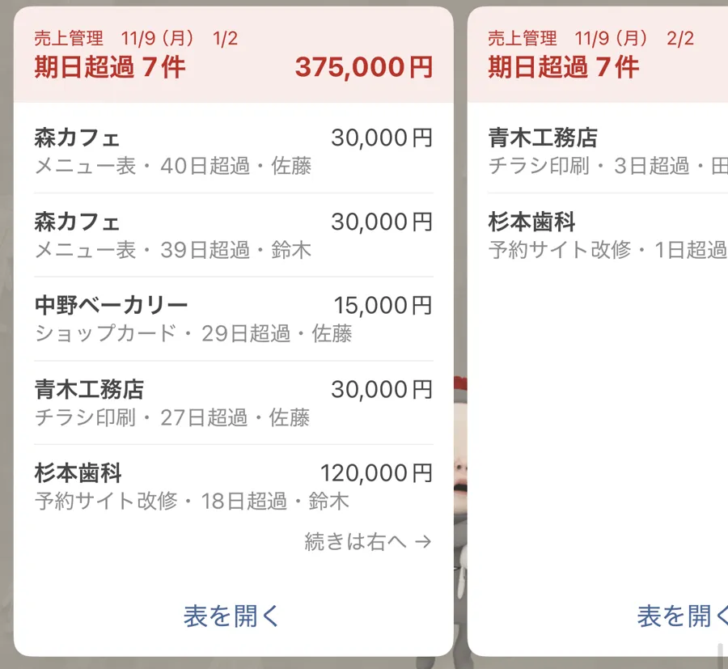

売上を入れるだけで、集計と入金の確認が自動で回る
スプレッドシートで手作業していた売上の入力・集計・進捗の管理を、Google Apps Script で自動にする仕組みの試作です。実際にあった募集の5つの機能をすべて作り、仮の売上62件で動かしています。入金の期日が近い・過ぎた売上は、毎朝 LINE とメールに届きます。
5つ
募集にあった機能をすべて作成
62件
仮の売上データで動作を確認
毎朝9時
期日超過・期日間近を LINE とメールに
募集で挙がっていたこと
- 売上の入力・集計・進捗の管理を手作業でしていて、時間がかかる
- 手作業による入力や集計の間違いを防ぎたい
- 期日の前後に、メールか LINE で知らせてほしい
- エラーが起きた時に、記録と知らせがほしい
業務の流れがどう変わるか
いま
- 売上をシートに手で入れる
- 月末に手で集計する
- 入金の遅れは表を見て探す
毎月の手作業
これから
- 売上を1行入れる
- 金額・状態・集計が自動で出る
- 期日が近い・過ぎたら毎朝 LINE に届く
- 届いた通知を見て確かめる
確認するだけ
色の付いた段は、仕組み（AI・自動処理）が行います。ほかは人の作業です。
担当した内容をもとにした、業務のイメージです。実際の画面ではありません。
作ったもの
- 入力のたびの自動処理: 金額（数量×単価）と状態（完了・期日超過・期日間近・未処理）を自動で付け、入力の抜けや間違いはセルを赤くして「要確認」にする
- 日次・月次の集計: 日ごと・月ごと・担当ごと・取引先ごとの件数・売上・入金済み・未入金と、月ごとの棒グラフ
- 毎朝9時の通知: 期日超過と期日間近を、LINE（横にめくるカードで全件）とメールに1通ずつ。0件の日と、同じ日の2回目は送らない
- LINE は、2025年3月に終わった LINE Notify の代わりに、LINE公式アカウントの Messaging API で送る。鍵はコードにもシートにも書かず、スクリプト プロパティに置く
- エラーの記録と知らせ: 処理ごとの結果を「ログ」シートに残し、送れなかった時は管理者にメール。LINE のカードが断られた時は文字で送り直す
- 使い方のシート: 導入から毎日の入力・困った時まで、1操作1行・画面つきの19手順
人と仕組みの分担
| 段 | 担当 | 中身 |
|---|---|---|
| 売上を1行入れる | 人 | 日付・取引先・数量・単価・期日を入力する |
| 金額と状態を付ける | 仕組み | 入力のたびに計算し、抜けや間違いは赤くして「要確認」にする |
| 日次・月次の集計 | 仕組み | 日・月・担当・取引先ごとの表とグラフを更新する |
| 期日の知らせ | 仕組み | 毎朝9時に、期日超過と期日間近を LINE とメールに送る |
| 入金の確認 | 人 | 届いた通知を見て、取引先に確かめる |
工夫した所
知らせすぎない
0件の日と、同じ日の2回目は送りません。毎朝届く物が「見なくてよい通知」にならないようにしました。
止まった時に気づける
処理ごとの結果を「ログ」シートに残し、送れなかった時は管理者にメールが届きます。
渡したその日から使える
導入から毎日の入力・困った時までを、1操作1行・画面つきの19手順にまとめました。
画面



取り組みの成果
BEFORE
集計 月末に手で集計
AFTER
入力のたびに自動
BEFORE
入金の確認 表を見て探す
AFTER
毎朝 LINE とメールに届く
BEFORE
入力の間違い 後で気づく
AFTER
その場で赤く表示
仮のデータでの動作の確認です。判定・集計・通知の形は手元のテスト11件で確かめ、LINE とメールに実際に届くことも確かめています。
使った道具
Google Apps ScriptGoogleスプレッドシートLINE Messaging APIGmail
同じ悩みがありそうな方
- 売上をスプレッドシートで手作業で管理している
- 入金の遅れに気づくのが遅れがち
- 毎月の集計に時間がかかる
よくある質問
実際の会社のデータで動いていますか？
いいえ。実際にあった募集の内容をもとに作った試作で、仮の売上62件で動かしています。
LINE Notify は終わったと聞きました。
はい、2025年3月に終了しています。この試作は、LINE公式アカウントの Messaging API で送っています。
通知が止まった時は、どうなりますか？
処理ごとの結果を「ログ」シートに残し、送れなかった時は管理者にメールで知らせます。LINE のカードが断られた時は、文字で送り直します。
ほかの実績


同じような作業を、楽にできるか相談する
60分の無料オンライン相談（Google Meet）は、空いている日時を選ぶだけで予約できます。文章で相談したい方は、フォームからどうぞ。